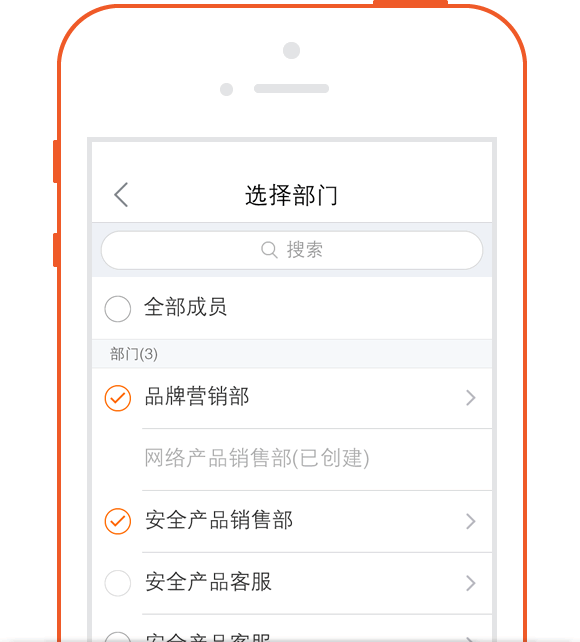
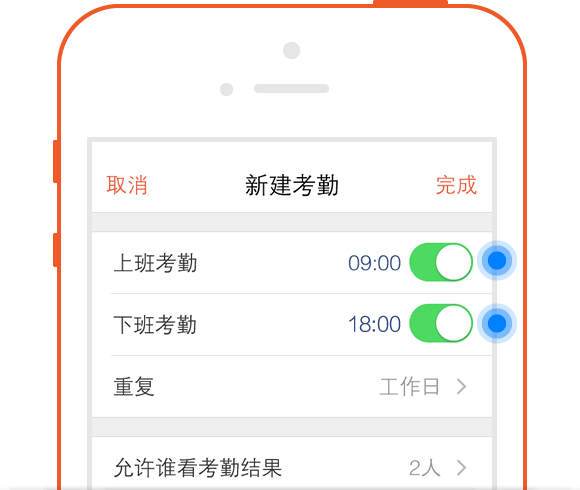

怎么使用工作报告
-
一,工作报告-写日报
-
进入“办公-工作报告”点击界面右上角的“＋”号来新建日报
-
写日报时，日报日期默认为当天，当员工忘记提交日报时，也可调整日期进行日报的补填。日报的日期选择不能晚于当前日期。
-
日报填写的是一天的工作内容和心得，也可汇报未来一天的工作计划

-
二,工作报告-写周报
-
进入“办公-工作报告”点击界面右上角的“＋”号来新建周报
-
写周报时，日报日期默认为本周，当员工忘记提交周报时，也可调整日期进行周报的补填。周报日期跨度为前两周。
-
日报填写的是本周的工作内容和心得，也可汇报下一周的工作计划。

-
三,工作报告-写月报
-
进入“办公-工作报告”点击界面右上角的“＋”号来新建月报
-
写月报时，日报日期默认为当月，当员工忘记提交月报时，也可调整日期进行月报的补填。月报日期跨度为前两个月。
-
日报填写的是一个月的工作内容和心得，也可汇报下个月的工作计划。
-
四,工作报告-批阅
-
进入“办公-工作报告”，点击界面顶部标题，可选择查看“我提交的工作报告”、“提交给我的工作报告”、“抄送给我的工作报告”。
-
我提交的工作报告：即我填报的报告，该报告可以有草稿状态、提交未读状态，提交已读状态。草稿状态，会有一个草稿的标示，提交未读状态，会有一个未读的标示，草稿状态可重新编辑提交，未读状态可修改编辑，提交已读状态，即批阅人已经批阅，此时，只能查看。
提交给我的工作报告：即批阅人是我并且为提交状态的报告，我可进行查看批阅。批阅后，该报告的未读标示就会自动消失。
-
抄送给我的工作报告：即抄送人中有我的报告，我可进行看下评价。评价后，该报告的未读标示不会因为我做了评价操作可消失。